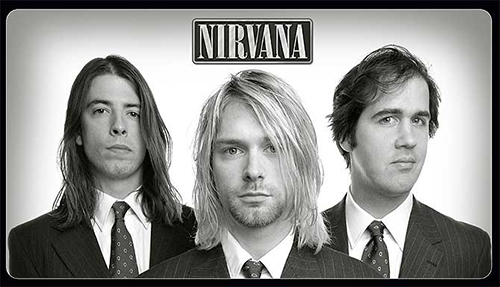

Nirvana fue una banda de grunge estadounidense procedente de Aberdeen, Washington, Estados Unidos fundada por el vocalista y guitarrista Kurt Cobain y el bajista Krist Novoselic en 1987. Desde su formación, Nirvana atravesó una serie de frecuentes cambios de baterista hasta que en 1990 se unió, de manera definitiva, el baterista Dave Grohl. Nirvana actualmente es considerada como una de las bandas más famosas, importantes e influyentes de la historia de la música, siendo considerada banda símbolo de una generación
A finales de la década de los 80 Nirvana se estableció como parte de la escena musical de Seattle con su álbum debut Bleach, lanzado bajo el sello independiente de Seattle, Sub Pop, en 1989 el cual vendió 5 millones de copias en todo el mundo. La banda llegó a desarrollar finalmente un sonido que se basaba en los contrastes entre versos tranquilos y coros intensos. Un año más tarde, la banda firmó con la discográfica DGC Records y en 1991 lanzó su segundo álbum: Nevermind. El primer sencillo del álbum, «Smells Like Teen Spirit», escaló las listas musicales en todo el mundo e inició la explosión de lo que hasta ese momento era conocido como rock alternativo en la escena musical mundial, en un movimiento al que los medios de la época se referirían como grunge. Además de Nirvana, otras bandas de la escena musical de Seattle como Pearl Jam, Alice in Chains y Soundgarden también ganaron popularidad; como resultado, el rock alternativo se convirtió en el género dominante en la radio y la televisión musical durante la primera mitad de la década de los 90